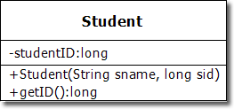
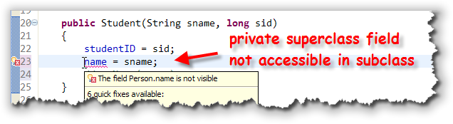
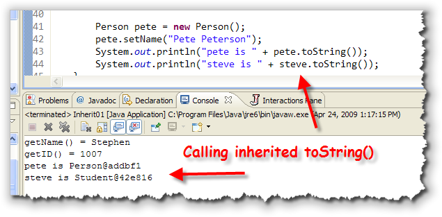
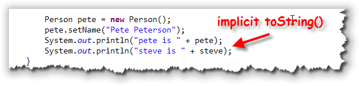
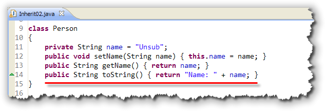
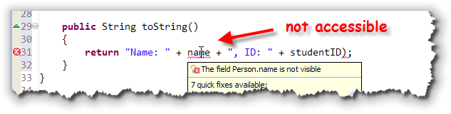
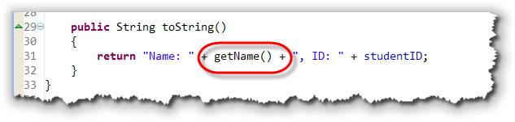
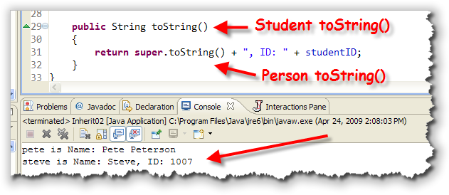
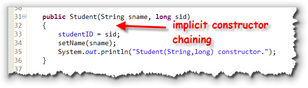

Classification is one of the primary mechanisms that we use to understand the natural world around us. Starting as infants we begin to recognize the difference between categories like food, toys, pets, and people. As we mature, we learn to divide these general categories or classes into subcategories like siblings and parents, vegetables and dessert.
When faced with a new object, we try to understand it by fitting it into the categories with which we’re acquainted:
- Does it taste good? Perhaps it’s dessert.
- Is it soft and fuzzy? Maybe it’s a pet.
- Otherwise, it’s most certainly a toy of some sort!
Encapsulation—the specification of attributes and behavior as a single entity—allows us to build on this understanding of the natural world as we create software. By creating classes and objects that model categories in the "real world," we have confidence that our software solutions closely track the problems we are trying to solve.
Once we've learned how to design our own classes, instead of thinking in terms of computer files and variables, our programs can be expressed in terms of Customers, Invoices, and Products.
Introducing Inheritance
 Inheritance adds to encapsulation the ability to express
relationships between classes. Think back to the categories
"desserts" and "vegetables." Cherry pie and broccoli are both,
at least arguably, edible items; for humans, they belong to
the food class.
Inheritance adds to encapsulation the ability to express
relationships between classes. Think back to the categories
"desserts" and "vegetables." Cherry pie and broccoli are both,
at least arguably, edible items; for humans, they belong to
the food class.
Yet most of us recognize that, in addition to belonging to the food class, cherry pie is a kind of dessert, whereas broccoli is a kind of vegetable. Both desert and vegetable represent subcategories of foods.
If you ponder this for a moment, you’ll realize that you can draw three conclusions:
- Although both cherry pie and broccoli are kinds of food, the food class itself consists of, thankfully, more than just these two items. Cherry pie and broccoli are just two small subsets of all possible food types. Thus, the relationship between the food class and the cherry pie class is one of superset (food) and subset (cherry pie). In object-oriented terminology, we call this the superclass-subclass relationship.
 Superclasses and subclasses can be arranged in a
hierarchy, with one superclass divided into
numerous subclasses, and each subclass divided into
more specialized kinds of subclasses. That’s what we
find with the food class.
Superclasses and subclasses can be arranged in a
hierarchy, with one superclass divided into
numerous subclasses, and each subclass divided into
more specialized kinds of subclasses. That’s what we
find with the food class.
It can be divided into desserts, vegetables, soups, salads, and entrees. Each category can be further divided into more specialized kinds of food.
- A classification hierarchy represents an organization based on generalization and specialization. The superclasses in such a hierarchy are very general, and their attributes few; the only thing that a class must do to qualify as food, for instance, is to provide nutrients.
As you move down the hierarchy, the subclasses become more specialized, and their attributes and behavior become more specific. Thus, although broccoli qualifies as food (it is, after all, digestible), it lacks the necessary qualifications to make it into the dessert class.
Inheritance and Programming
When you create your own new, reusable components, there are really three different strategies you can use:
- You can build your component completely from scratch,
like we did with the various versions of the
Ballclass in Unit 9. - You can combine simpler parts together, such as
a
JLabeland aJTextField, to create a more complex component. - You can extend a more basic component by adding new features or behaviors.
Since you've alread learned how to build a class from scratch, in this lesson we'll take a look at these last two techniques. We'll start by extending an existing component to create a new class that inherits methods and fields from its superclass.
Has-A and Is-A
These two different strategies are used to express two different kinds of "class relationships":
- The has-a relationship, when one class is a combination
of other objects. We can say that a
JLabelobject has-a background color property. In this kind of has-a relationship one component is composed of different parts. ABicycleclass thus may contain two instances of theWheelclass.  The is-a relationship, when one class is an extension
or "kind of" another class. The is-a relationship occurs
when members of one class form a subset of another class,
like the Animal, Mammal, Rodent example we discussed back
in Unit 8. This is also called an inheritance
relationship. In the inheritance relationship shown here,
we'd say that a
The is-a relationship, when one class is an extension
or "kind of" another class. The is-a relationship occurs
when members of one class form a subset of another class,
like the Animal, Mammal, Rodent example we discussed back
in Unit 8. This is also called an inheritance
relationship. In the inheritance relationship shown here,
we'd say that a MountainBikeis-aBicycle.
Back in Unit 9 we used the original applet version of a "bouncing
ball" program to develop, step-by-step, a bouncing-ball class;
one that contained constructors, accessors, and mutators, and that
"knew" how to bounce around the screen. The bouncing ball class that
we developed, though, doesn't work inside ACM graphics programs,
because it wasn't a member of the GObject family,
like all of the other ACM graphical objects.
In later lessons, we'll create two versions of the bouncing-ball class, both designed to work with ACM graphics programs. One will use inheritance, and one will use composition. Before we do that, though, let's look at how inheritance works in Java.
Inheritance: Syntax and Semantics
It's really tempting to dive right in and start by extending some of the ACM classes, making a new ImageBall or PlayingCard class, or perhaps fill in some of the missing geometric shapes; anyone up for a new GNonagon class?
The only problem with that strategy is that inheritance actually introduces quite a few new possiblities into your programs, and each of those possibilities needs to be handled in a very specific way. Starting with a more complex class, even though it might be more interesting, makes it easy to miss some of the details that you really must master to make effective use of the object-oriented technique of inheritance.
So, instead of working with fun stuff, like card games and shooting down aliens, in this lesson I'll return to the old, boring finger-exercises type of examples that let you concentrate on one piece of the inheritance puzzle at a time.
Topic 1: Extending a Class
 When you create a new class using inheritance, you use the
When you create a new class using inheritance, you use the
extends keyword to specify the parent or
superclass when you define the child or subclass.
For our first example, let's look at a simplest possible class
that represents people: the Person class. Then,
we'll create a new kind of Person, the
Student.
To the right is the UML (Unified Modeling Language) class diagram for the two classes we'll start with. You can download the source code for the Java program that contains these classes, Interit01.java by clicking the link in this sentence.
As we develop these classes,
instead of placing them in their own files, I'll put both classes
in a single file, along with a public test class. That way I
won't have to change the names or projects, since we'll have several
different versions. However, for the versions that you download,
I have changed the names of the classes to Student1
and Person1, so that you can run them all in the same
project, without getting an error.
Here's what you should notice about each of these classes.
The Person Class
 The Person class has a single attribute,
The Person class has a single attribute, name
which is stored as a String. The minus sign preceding
name tells us that the instance variable used to
store this attribute will be marked private.
The class has one mutator, setName() that allows
us to change the name of the Person. There is also
one accessor method, getName() which is a "getter"
method that allows us to read the value of the attribute. The
plus sign appearing before the method says that the method is
public. The void appearing at the
end of the entry is the method return type.
The Student Class

The Student class is a subclass ofPerson.
The hollow-headed arrow pointing from Student to
Person says that Student inherits
from or (in Java) extends the Person
class.
Student also has one private attribute, the
studentID which will be stored as a long.
To initialize both the student's name and their ID, the class
has a public constructor that takes two paraemters.
The class has an accessor or "getter" method to retrieve the
value stored in the studentID field. There are no
methods to set or change the ID. While a student might change
their name (because of marriage, for instance) they can never
change their student ID.
Inherited Methods and Fields
Let's create an object of the Student class,
and then call some of the methods:

 Notice that when I create the
Notice that when I create the Student object named
steve, I can call the getID() method,
which was defined in the Student class.
However, I can also call the setName()
and getName() methods which were not defined
in Student, but in Person. More
importantly, I'm also able to access the name
field in the Person class if I use these
methods. Why is that?
When we create Student objects, each subclass
object contains all of the attributes and methods
of its superclass. If we were to look at a "logical"
diagram of the student class, it would look something like
that shown here:
 However, (and this is very important), most of the
fields, and some of the methods will not be accessible
to the subclass object, because they were declared
However, (and this is very important), most of the
fields, and some of the methods will not be accessible
to the subclass object, because they were declared
private in the superclass.
So, for instance,
if we were to change the Student constructor
so that it attempted to set the private name
field directly, (instead of using the setName()
method), we'd get an error like this:

Even though you can't access theprivate name field
from the subclass, the field is are there nonetheless. You know
that because the inherited setName() and
getName() methods work correctly.
Those methods (and fields) that are not declared private
in the superclass are called inherited methods (and fields).
An object may use its inherited methods and fields without any
further qualification, exactly as if they were defined inside
the object's own class (as I've done in the example here.)
While private methods are not inherited
at all, private instance variables are
inherited, in the sense that each subclass object contains
a copy of each private variable defined in
the superclass, even though the methods in the subclass
object are not free to directly access that variable.
The Protected Modifier
If a superclass wishes to allow a subclass access to an instance
variable, but not allow public access, the method
or field can be given the protected modifier.
Protected fields and methods are kind of half-way between
public and private; the children can
access them, but the general public cannot.
These different access specifiers work kind of the same way most
of us manage our households. My children are free to access the
refridgerator, getting a glass of orange juice without asking
me; you, on the other hand, would have to knock at the front
door, and ask first. My refridgerator has something similar to
protected access.
On the other hand, even my children aren't permitted to
grab my credit card and charge up a storm on the Internet;
my credit card is private.
Specialization and Extension
Normally, a subclass extends an existing
class by adding additional fields or methods. That is
because logically, a subclass represents specialization.
The Elephant class represents a specialized form of
Mammal, and the Mammal class represents
a specialized form of Animal.
In our case, the Student class added one new
field and one new method, along with a constructor.
Implicit Inheritance
Every class without an explicit extends clause
implicitly inherits from the Java root class
named Object. Just as with explicit inheritance,
the implicit subclass (Person) inherits
several fields and methods from its superclass.
One of these is the toString() method. Even though
neither the Person nor the Student
class have not defined a toString() method, we can
call the toString() method inherited from
the Object class like this:

Of course, as you can see, the results are not very satisfying. TheObject version of toString() just
prints out the name of the class followed by the memory
address where the actual object is located in memory.
The example shown here explicitly calls
the inherited toString() method. The code can be
made even simpler, like this:

When you use any kind of object with string concatenation like I've done here, Java implicitly call's the object'stoString() method to perform the concatenation.
Of course, as you can see, in this case the inherited method really doesn't work the way we'd like. Which brings us to the second inheritance topic: method overriding.
Topic 2: Method Overriding
When an inherited method doesn't do exactly what you want, you can write a replacement method. This is called overriding the method. The new version of the method can either completely replace the existing version, or you can add some new actions to the original. (You can't however, just use some of the existing behavior.)
To illustrate this, we'll add toString() methods
to both of our demo classes. You can find the finished code
in Inherit02.java,
which you can download by clicking the link in this sentence.
The first change just adds toString() to the
Person class like this:

When you override a method liketoString() you must:
- Use exactly the same number and type of
parameters as the original method in the superclass. There
are no conversions between
intanddoublefor instance. - Return exactly the same type as the original method.
- Use an access specifier that is at least as
permissive as the superclass method. In other words, you can't
override a
publicmethod with aprivatemethod.
With this new version of toString() our Inherit02
sample code looks like this when it runs:
 Note that the variable
Note that the variable pete prints out the name as
you'd expect (since pete is a Person
object). The variable steve also uses the
new overridden toString() method defined in Person,
instead of the original version defined in the Object
class.
When we replaced toString() for the Person
class, we also replaced it for all of its subclasses.
Writing Student toString()
Now, let's override toString() in the Student
class as well. Here's a first attempt:

As you can see, though, the fieldname is not
accessible. This is the same problem we had earlier trying
to access name from the Student constructor.
There we were able to get around the problem by using the inherited
getName() accessor method, and we can do the same thing
here, like this:

While this works, though, it doesn't take advantage of the fact that we've already written thetoString()
code for the Person class. Essentially, in the
Student version of toString(), we're
writing exactly the same code again.
Isn't there some way we can run the original version of the
toString() method, and just add on the
new parts we want, like printing the student ID? Isn't there
someway we can combine inherited and overridden methods?
Yes, there is.
Calling Superclass Methods
As you saw earlier, the Student class automatically
inherited both the getName() and the
toString() methods from the Person
class. When we created a Student object, we could
use both of those methods just as if they were defined in the
student class.
Furthermore, when we defined new methods in the Student
class, we could call those inherited methods (such as
getName()), just as if they were defined inside
the Student class.
Let's see if we can put that to work by calling the inherited
version of toString(), which already prints the
object's name, from inside the new overridden toString()
method. Here's what that looks like, and here's what happens:
 The good news is that doing this is not syntactically
incorrect. The bad news is that your program blows up with
a
The good news is that doing this is not syntactically
incorrect. The bad news is that your program blows up with
a StackOverflowError when you try to run it.
The reason your program crashes is because when you call the
toString() method from inside a class that has
a definition for a toString() method, then the
overridden or Student version is used; it has
replaced the inherited Person version.
You are, in effect, calling the Student version
of toString() from inside itself. This
is called recursion and while it can be a powerful
problem-solving technique, doing it accidentally like this
usually results in a program crash.
The super Modifier
This problem is similar to the one we encountered when we
had instance variables and local variables that both had
the same name. When that happened, we were able to use the
special identifier named this to differentiate
between the two variables.
In this case we have an inherited superclass method named
toString() and an overridden subclass method
named toString().
We can differentiate between them by using the special
identifier named super, like this:

Now, the overridentoString() method calls the
superclass toString() method to do a portion of
its work.
Don't confuse method overriding (which is what we're doing here), with method overloading. With overloading, two or more methods have the same name, but different parameter lists. Overloaded methods can exist in the same class or in a subclass. (This is different than C++). Overriding methods can only exist in a subclass and they must have exactly the same parameters and return type as the method that they are replacing.
Topic 3: Inheritance and Constructors
The last thing you'll need to master to work with inheritance is how it affects constructors. You remember that a class constructor must have the same name as the class. That means that when you create a new class, the new class doesn't inherit any of the superclass constructors. Instead, it needs to define new constructors of its own.
To see how that works, let's add two constructors to the
Person class, which currently uses only the
default constructor that is automatically written
by Java, when you don't supply any explicit constructors:
 Both constructors just print a message so we can keep track of
when they've been called. The working constructor uses its
Both constructors just print a message so we can keep track of
when they've been called. The working constructor uses its
String parameter to initialize the name
instance variable in addition to printing a diagnostic message.
I've also added a similar diagnostic message to the
Student class constructor.
The test program creates two objects, one Person and
one Student, and prints out their info, just like
the previous example. When we run the test code in
Inherit03.java (which you can download by clicking the
link in this sentence), you'll see that instead of two constructors,
both Person constructors have been called,
along with the Student constructor:
 Why is that?
Why is that?
Constructor Chaining
When you call a subclass constructor, before the constructor can do any of its work, it first needs to make sure that its superclass constructor has been called. This happens before the first line in the subclass constructor ever runs.
You don't have to do anything special to make this happen.
When your constructor runs, if implicitly calls the no-arg
constructor in the superclass as its first line of code, and that
constructor calls its superclass constructor, and so on,
all the way up to the Object class. This is called
constructor chaining.
So, consider for a second, the Student class
constructor shown here:

Even though you don't see it in the code, in reality the following set of commands are run when theStudent construct is invoked
(after memory has been allocated and all instance variables
have been initialized):
- call the
Objectno-arg constructor - call the
Personno-arg constructor - assign the parameter to the instance variable
- call the
setName()inherited method - print the diagnostic message
That's why we saw three diagnostic messages in the sample program,
when we only created two objects. When we created the Student
object named steve, the Student constructor
first called the no-arg constructor for the Person
class. If the Object class no-arg constructor printed out
diagnostic messages, like our constructors do, then you won't have seen
two of those as well: one for the Student object and
one for the Person object.
Default and No-Arg Constructors
What happens if we remove the no-arg constructor from the
Person class? If you comment it out, you'll see that
it doesn't affect the Person class at all, but the
Student constructor stops working:
 As the Eclipse error message points out, every time you extend a class,
the superclass must:
As the Eclipse error message points out, every time you extend a class,
the superclass must:
- have a no-arg constructor like
Person(), or - have a default constructor which is automatically written if the superclass has no explicit constructors, or
- the subclass (
Studentin this case) must explicitly call another constructor.
That's what we want to look at now. How exactly do you explicitly call a superclass constructor?
Calling super()
You remember when you wrote overloaded constructors in Unit 9, that
you could invoke one constructor from another by using the special
syntax this(). When you use this() to call
another constructor, it needed to appear on the first line of the
method.
With inheritance, instead of calling another, overloaded constructor
in the same class, you can call a constructor in your immediate
superclass. Instead of using this(), you use
super() in a similar manner. As with this(),
super() must appear on the first line of the constructor
body. Of course that means you can use this() or
super(), not both.
Here's how you'd modify the Student constructor to call
the Person(String) constructor, instead of using
the setName() method, as we've done up until now:
 Notice that the
Notice that the setName() method can be removed alltogether
once you do this. This is the normal way to write subclass constructors.
Now, when we run our sample program, instead of implicitly calling the
Person no-arg constructor (which no longer exists), we
explicitly chain to the Person(String) constructor
to initialize the name field:

Topic 4: Final Classes and Methods
Since subclasses are free to provide replacement methods for every public method defined in the superclass, it's possible for a subclass to replace a method that the original class designer wanted left alone.
If you look at the Person class, for instance, you
can see that the getName() method just returns the
name of the person. This method works fine as is, and there's
really no reason for a subclass to change it. Because of the
way the superclass was written, though, nothing prevents a
subclass from overriding it like this to change the way
the method works:
class Flatterer extends Person
{
public String getName()
{
return "Emperor " + super.getName();
}
}
Although the subclass has no access to the private
instance variable name, because the getName()
method could be overridden, the subclass was able to change the
access to this method.
To prevent this, when you design a base or superclass, you need
to consider which methods you want to allow others to extend
and which ones should be "set in stone". In our Person
class, there is no reason to let anyone change the way that
getName() or setName() work, so we can
seal them by using the keyword final like this:
 When a method is marked
When a method is marked final then subclasses are
prevented from overriding it.
Final Classes
When you are designing a collection of classes, you normally
won't want all of the classes to be extensible. In the Java
Class Libraries, for instance, there are several classes that
you can't extend, such as String and Math.
The designers of the Java Class Libraries felt that allowing
people to create their own versions of the String
class would open up various security holes in the language.
To prevent others from extending your class, just add
final to the class header, just like you
did for the method header. If you make a class non-extendable
by making it final, then there is no reason
to make the methods final as well.
Well that's it for the boring finger exercises. Let's get back to the fun stuff.
Coming Up ...
In this lesson you learned about the syntax and semantics of inheritance. You learned how to create a subclass and use the new classes inherited methods. You also learned how to override superclass methods and how to write constructors in a subclass.
In the next lesson, we'll put some of these finger exercises to work creating new components that work with the ACM graphics framework and with the Java Class Libraries.